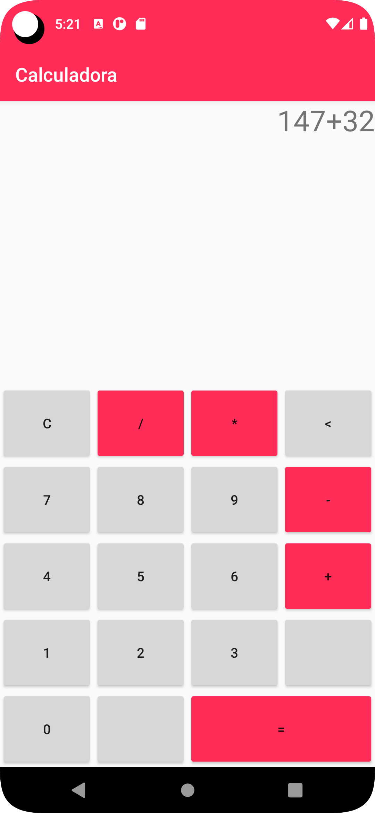

Calculadora
Uma aplicação com intuito de aprendizado para android, simples porém funciona para seu propósito básico. Afinal, é uma calculadora.
Precisa de ajuda pra gerenciar seu tempo na hora de alguma atividade? Pomodoro é uma técnica para te ajudar com isso, 4 seções de 25 minutos de estudo seguidos com 5 minutos de pausa cada e por fim um descanso de 30 minutos.